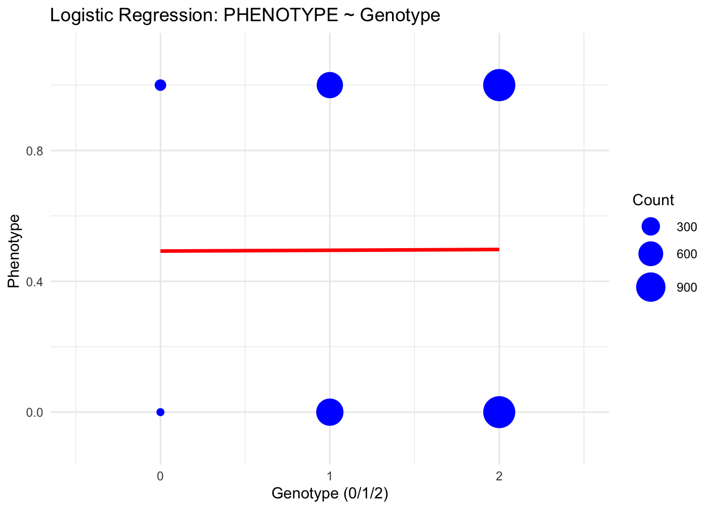
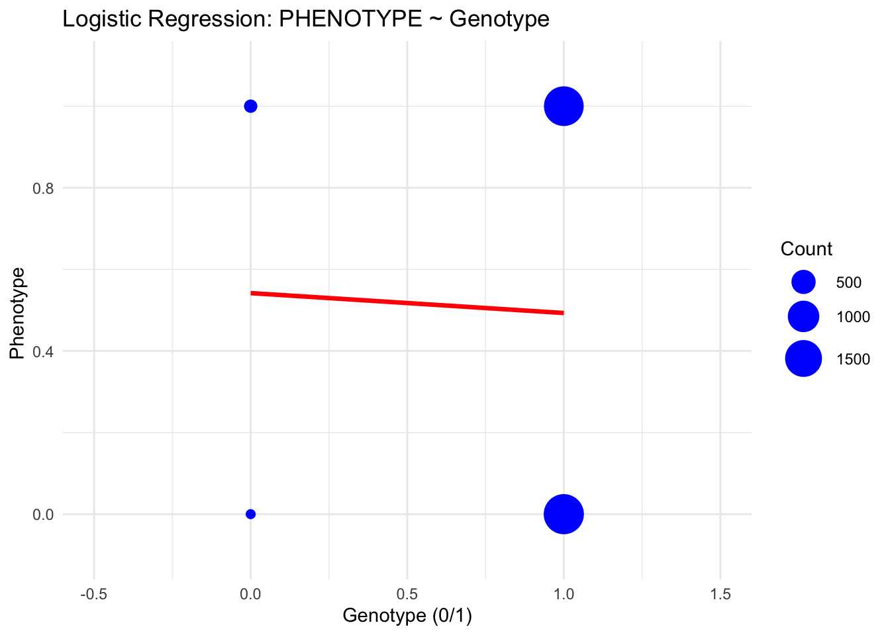
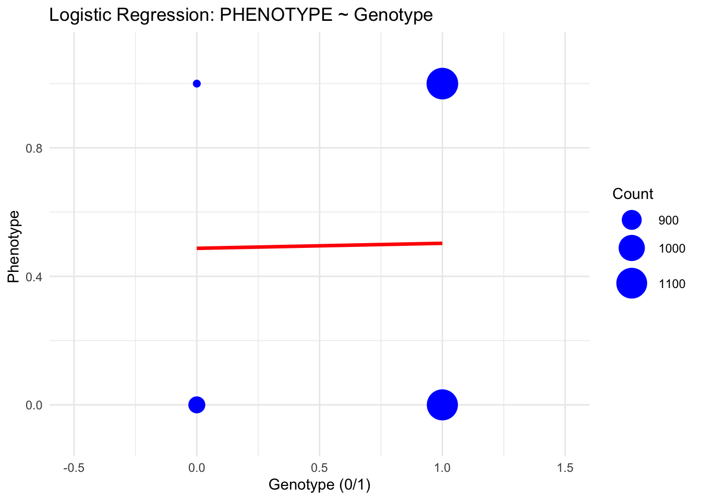

library(data.table)
library(ggplot2)
library(seqminer)
library(HardyWeinberg)
library(dplyr)tutorial 1
This tutorial introduces the structure, content, and usage of PLINK binary genotype datasets with 4,000 individuals and more than 300K SNPs. The goal is to help beginners understand how genotype data is stored and accessed in PLINK, and prepare them for downstream tasks like GWAS and QC.
You will need to install PLINK and run the analyses. Please follow the OS-specific setup guide in SETUP.md. PLINK is a free, open-source whole genome association analysis toolset, designed to perform a range of basic, large-scale analyses in a computationally efficient manner. For this tutorial, we are using simulated case/control data.
1. What is a PLINK Binary Dataset?
A PLINK binary dataset consists of three files:
- gwa.qc.bed - Binary genotype matrix (compressed, encoded format)
- gwa.qc.bim - SNP annotation file: chromosome, SNP ID, base-pair position, alleles
- gwa.qc.fam - Sample information file: IDs, sex, phenotype
Please download the three files from the following Google Drive link and place them in 02_activities/data/: https://drive.google.com/drive/folders/1v-FbDqu95wdUje3foFXMdXrBjYEAJTB2?usp=drive_link
2. View the .fam and .bim Files
Sample information file: IDs, sex, phenotype
#pwd
head ./02_activities/data/gwa.qc.fam
#head ../data/gwa.qc.fam0 A2001 0 0 1 2
1 A2002 0 0 1 2
2 A2003 0 0 1 2
3 A2004 0 0 1 2
4 A2005 0 0 1 2
5 A2006 0 0 1 2
6 A2007 0 0 1 2
7 A2008 0 0 1 2
8 A2009 0 0 1 2
9 A2010 0 0 1 2| Column Name | Description |
|---|---|
| FID | Family ID (set to 0 if not used) |
| IID | Individual ID (unique for each person) |
| PAT | Paternal ID (set to 0 if unknown) |
| MAT | Maternal ID (set to 0 if unknown) |
| SEX | Sex: 1 = male, 2 = female, 0 = unknown |
| PHENOTYPE | Trait status: 1 = control, 2 = case, 0 or -9 = missing , or a quantitative trait |
# SNP annotation file: chromosome, SNP ID, base-pair position, alleles
head ./02_activities/data/gwa.qc.bim1 rs3737728 0 1011278 A G
1 rs1320565 0 1109721 T C
1 rs3813199 0 1148140 A G
1 rs11804831 0 1184667 C T
1 rs3766178 0 1468043 C T
1 rs3128342 0 1476697 A C
1 rs880051 0 1483590 A G
1 rs2296716 0 1487687 T C
1 rs2474460 0 1833906 C T
1 rs3820011 0 1878053 A C| Column Name | Description |
|---|---|
| CHR | Chromosome number |
| SNP | SNP ID (e.g., rs number) |
| CM | Genetic distance (usually 0) |
| BP | Physical position in base pairs |
| A1 | PLINK’s effect allele (the counted allele) |
| A2 | the other allele (reference/alternative allele depending on context) |
3. Understanding the .bed file
The .bed file stores encoded genotypes in a compact binary format. It is not human-readable. Use PLINK to decode it.
Convert to readable format:
plink2 --bfile ./02_activities/data/gwa.qc --recode A --out ./02_activities/data/gwa_qc_additiveThis creates a .raw file with dosage coding:
0 = homozygous for A2
1 = heterozygous
2 = homozygous for A1
# Load genotype data
geno <- fread("./02_activities/data/gwa_qc_additive.raw") # columns include FID, IID, and SNP genotype
geno[1:5,1:10] FID IID PAT MAT SEX PHENOTYPE rs3737728_G rs1320565_C rs3813199_G
<int> <char> <int> <int> <int> <int> <int> <int> <int>
1: 0 A2001 0 0 1 2 1 2 2
2: 1 A2002 0 0 1 2 1 2 2
3: 2 A2003 0 0 1 2 1 2 2
4: 3 A2004 0 0 1 2 2 2 2
5: 4 A2005 0 0 1 2 1 2 2
rs11804831_T
<int>
1: 2
2: 2
3: 1
4: 2
5: 14. Hardy-Weinberg Equilibrium (HWE) test
We can test each SNP for deviation from Hardy-Weinberg Equilibrium:
plink2 --bfile ./02_activities/data/gwa.qc --hardy --out ./02_activities/data/gwa_qc_hweThis produces gwa_qc_hwe.hardy containing observed and expected genotype counts plus p-values.
# View HWE results
hwe <- fread("./02_activities/data/gwa_qc_hwe.hardy")
head(hwe) #CHROM ID A1 AX HOM_A1_CT HET_A1_CT TWO_AX_CT O(HET_A1)
<int> <char> <char> <char> <int> <int> <int> <num>
1: 1 rs3737728 G A 1713 1841 428 0.462330
2: 1 rs1320565 C T 3368 589 19 0.148139
3: 1 rs3813199 G A 3531 428 12 0.107781
4: 1 rs11804831 T C 2820 1061 81 0.267794
5: 1 rs3766178 T C 2391 1378 214 0.345970
6: 1 rs3128342 C A 1927 1655 382 0.417508
E(HET_A1) P
<num> <num>
1: 0.447932 0.0437892
2: 0.145262 0.2734290
3: 0.107347 1.0000000
4: 0.261040 0.1133540
5: 0.350629 0.4158770
6: 0.424044 0.3302730CHROM - Chromosome number.
ID - SNP ID (e.g. rsID).
A1, AX - The two alleles (effect and reference).
HOM_A1_CT - Count of A1/A1 homozygotes.
HET_A1_CT - Count of A1/AX heterozygotes.
TWO_AX_CT - Count of AX/AX homozygotes.
O(HET_A1) - Observed heterozygote frequency (proportion).
E(HET_A1) - Expected heterozygote frequency under HWE.
P - Hardy-Weinberg p-value testing deviation from equilibrium.
For QC, SNPs with very low P are often removed, as this may indicate genotyping error.
5. Estimate Allele Frequencies
Calculate and output allele frequencies in your dataset:
plink2 --bfile ./02_activities/data/gwa.qc --freq --out ./02_activities/data/gwa_qc_freqView frequency table: gwa_qc_freq.afreq includes columns for SNP, chromosome, allele counts, MAF.
freq <- fread("./02_activities/data/gwa_qc_freq.afreq")
head(freq) #CHROM ID REF ALT PROVISIONAL_REF? ALT_FREQS OBS_CT
<int> <char> <char> <char> <char> <num> <int>
1: 1 rs3737728 G A Y 0.3386490 7964
2: 1 rs1320565 C T Y 0.0788481 7952
3: 1 rs3813199 G A Y 0.0569126 7942
4: 1 rs11804831 T C Y 0.1543410 7924
5: 1 rs3766178 T C Y 0.2267140 7966
6: 1 rs3128342 C A Y 0.3051210 79286. Subset SNPs and Individuals
Step 1: Create SNP and sample list files
# Create SNP list file with 4 example SNPs
printf "%s\n" rs1525873 rs2902663 rs343376 rs3813199 > ./02_activities/data/snplist.txt
# Create sample list file with header + 3 samples
#echo "FID IID" > ./02_activities/data/samplist.txt
#echo "0 A2001" >> ./02_activities/data/samplist.txt
#echo "2 A2003" >> ./02_activities/data/samplist.txt
#echo "5 A2006" >> ./02_activities/data/samplist.txtStep 2: Subset SNPs and/or samples
plink2 --bfile ./02_activities/data/gwa.qc \
--extract ./02_activities/data/snplist.txt \
--recode A \
--out ./02_activities/data/geno.additive
# --keep ./02_activities/data/samplist.txt can be used to extract a specific list of samples# Load genotype data
geno_subset <- fread("./02_activities/data/geno.additive.raw")
geno_subset=na.omit(geno_subset)
geno_subset$PHENOTYPE=geno_subset$PHENOTYPE-1
head(geno_subset) FID IID PAT MAT SEX PHENOTYPE rs3813199_G rs2902663_C rs343376_G
<int> <char> <int> <int> <int> <num> <int> <int> <int>
1: 0 A2001 0 0 1 1 2 1 1
2: 1 A2002 0 0 1 1 2 2 2
3: 2 A2003 0 0 1 1 2 2 1
4: 3 A2004 0 0 1 1 2 0 2
5: 4 A2005 0 0 1 1 2 2 1
6: 5 A2006 0 0 1 1 2 2 1
rs1525873_T
<int>
1: 1
2: 2
3: 1
4: 1
5: 1
6: 2table(geno_subset$PHENOTYPE)
0 1
1974 1944 Alternatively, we can load all three files into R.
The PLINK2 commands are especially useful when working with a large number of SNPs (genome-wide), while R is better suited for loading smaller subsets of genotype data.
set.seed(1234)
fam_all <- fread("./02_activities/data/gwa.qc.fam")
N=dim(fam_all)[1];N[1] 4000bim_all<- fread("./02_activities/data/gwa.qc.bim")
M <- nrow(bim_all);M[1] 101083indx.SNP=which((bim_all$V2)%in%c('rs1525873','rs2902663','rs343376','rs3813199'))
geno_mat<- readPlinkToMatrixByIndex('./02_activities/data/gwa.qc', 1:N, indx.SNP)R functions to calculate the allele frequency.
# Compute allele frequencies for each SNP (column), ignoring NAs
allele_freq <- apply(geno_mat, 2, function(x) {
sum(x, na.rm = TRUE) / (2 * sum(!is.na(x)))
})
# Look at the result
allele_freq 1:1148140 1:23866788 1:42466184 3:111232702
0.903625 0.492625 0.706625 0.747250 We can also conduct the HWE test in R.
hwe_pvalue <- function(geno_vector) {
# Remove missing
geno_vector <- geno_vector[!is.na(geno_vector)]
# Count genotypes
counts <- table(geno_vector)
# Check if there are enough counts to test
if (any(counts == 0)) {
return(NA) # Cannot test properly with empty cell
} else {
result=HWExact(as.numeric(counts))$pval
#result=HWChisq(as.vector(counts))$pval
return(result)
}
}
geno_mat[geno_mat==-9]=NA
# Apply to all 4 SNPs (columns of the matrix)
hwe_pvalues <- apply(geno_mat, 2, hwe_pvalue)Haldane Exact test for Hardy-Weinberg equilibrium (autosomal)
using standard (SELOME) p-value
sample counts: n = 12 n = 428 n = 3531
H0: HWE (D==0), H1: D <> 0
D = 0.8622513 p-value = 1 Haldane Exact test for Hardy-Weinberg equilibrium (autosomal)
using standard (SELOME) p-value
sample counts: n = 879 n = 2015 n = 1080
H0: HWE (D==0), H1: D <> 0
D = 16.54158 p-value = 0.3087309 Haldane Exact test for Hardy-Weinberg equilibrium (autosomal)
using standard (SELOME) p-value
sample counts: n = 282 n = 1519 n = 2175
H0: HWE (D==0), H1: D <> 0
D = -9.182533 p-value = 0.4603105 Haldane Exact test for Hardy-Weinberg equilibrium (autosomal)
using standard (SELOME) p-value
sample counts: n = 257 n = 1464 n = 2275
H0: HWE (D==0), H1: D <> 0
D = -12.22497 p-value = 0.3079958 # Show results
hwe_pvalues 1:1148140 1:23866788 1:42466184 3:111232702
1.0000000 0.3087309 0.4603105 0.3079958 #Compare with the HWE p-values produced by PLINK
hwe[hwe$ID%in%c('rs1525873','rs2902663','rs343376','rs3813199'),] #CHROM ID A1 AX HOM_A1_CT HET_A1_CT TWO_AX_CT O(HET_A1)
<int> <char> <char> <char> <int> <int> <int> <num>
1: 1 rs3813199 G A 3531 428 12 0.107781
2: 1 rs2902663 C A 1080 2015 879 0.507046
3: 1 rs343376 G A 2175 1519 282 0.382042
4: 3 rs1525873 T C 2275 1464 257 0.366366
E(HET_A1) P
<num> <num>
1: 0.107347 1.000000
2: 0.498721 0.308731
3: 0.386661 0.460311
4: 0.372485 0.3079967. Logistic Regression: Additive Model
#Pick SNP rs1525873
table(geno_subset$rs1525873_T)
0 1 2
251 1440 2227 freq[freq$ID=='rs1525873',] #CHROM ID REF ALT PROVISIONAL_REF? ALT_FREQS OBS_CT
<int> <char> <char> <char> <char> <num> <int>
1: 3 rs1525873 T C Y 0.247497 7992The T allele is the major allele, with frequency 1 - 0.247497. Therefore, most samples have genotype coded as 2 rather than 0.
# Fit logistic regression model
model <- glm(PHENOTYPE ~ rs1525873_T, data = geno_subset, family = binomial)
# View model summary
summary(model)
Call:
glm(formula = PHENOTYPE ~ rs1525873_T, family = binomial, data = geno_subset)
Coefficients:
Estimate Std. Error z value Pr(>|z|)
(Intercept) -0.029797 0.084454 -0.353 0.724
rs1525873_T 0.009627 0.051966 0.185 0.853
(Dispersion parameter for binomial family taken to be 1)
Null deviance: 5431.3 on 3917 degrees of freedom
Residual deviance: 5431.2 on 3916 degrees of freedom
AIC: 5435.2
Number of Fisher Scoring iterations: 3table(geno_subset$rs1525873_T)
0 1 2
251 1440 2227 We visualize the association between the phenotype and the genotype.
# Make prediction over continuous range (for smooth curve)
geno_range <- data.frame(
rs1525873_T = seq(0, 2, length.out = 100)
)
geno_range$predicted_prob <- predict(model, newdata = geno_range, type = "response")
count_data <- geno_subset %>%
mutate(PHENOTYPE = round(PHENOTYPE)) %>%
filter(!is.na(rs1525873_T), !is.na(PHENOTYPE)) %>%
group_by(rs1525873_T, PHENOTYPE) %>%
summarise(count = n(), .groups = "drop")
ggplot() +
geom_point(
data = count_data,
aes(x = rs1525873_T, y = PHENOTYPE, size = count),
color = "blue"
) +
geom_line(
data = geno_range,
aes(x = rs1525873_T, y = predicted_prob),
color = "red",
size = 1.2
) +
scale_size_continuous(range = c(2, 10)) +
labs(
title = "Logistic Regression: PHENOTYPE ~ Genotype",
x = "Genotype (0/1/2)",
y = "Phenotype ",
size = "Count"
) +
coord_cartesian(xlim = c(-0.5, 2.5), ylim = c(-0.1, 1.1)) +
theme_minimal()
Interpretation: We performed logistic regression to test the association between genotype (rs1525873_T) and the binary phenotype. The regression coefficient for rs1525873_T is 0.14749 (p = 0.00476), indicating that each additional copy of the T allele is associated with increased odds of being a case. The significant p-value suggests evidence of an association between this SNP and the phenotype in our sample.
In practice, when testing genetic associations, we include additional covariates in the model, such as age, sex, and principal components to adjust for confounding effects. We will cover this in more detail later in the course.
8. Logistic Regression: Dominance and Recessive Models
Dominance coding
geno_subset_dom <- geno_subset
geno_subset_dom[, 7:ncol(geno_subset_dom)] <- as.data.frame(
lapply(geno_subset[, 7:ncol(geno_subset)], function(x) ifelse(x > 0, 1, 0))
)
head(geno_subset_dom) FID IID PAT MAT SEX PHENOTYPE rs3813199_G rs2902663_C rs343376_G
<int> <char> <int> <int> <int> <num> <num> <num> <num>
1: 0 A2001 0 0 1 1 1 1 1
2: 1 A2002 0 0 1 1 1 1 1
3: 2 A2003 0 0 1 1 1 1 1
4: 3 A2004 0 0 1 1 1 0 1
5: 4 A2005 0 0 1 1 1 1 1
6: 5 A2006 0 0 1 1 1 1 1
rs1525873_T
<num>
1: 1
2: 1
3: 1
4: 1
5: 1
6: 1Fit logistic regression model:
model <- glm(PHENOTYPE ~ rs1525873_T, data = geno_subset_dom, family = binomial)
summary(model)
Call:
glm(formula = PHENOTYPE ~ rs1525873_T, family = binomial, data = geno_subset_dom)
Coefficients:
Estimate Std. Error z value Pr(>|z|)
(Intercept) 0.1677 0.1267 1.324 0.186
rs1525873_T -0.1955 0.1309 -1.494 0.135
(Dispersion parameter for binomial family taken to be 1)
Null deviance: 5431.3 on 3917 degrees of freedom
Residual deviance: 5429.0 on 3916 degrees of freedom
AIC: 5433
Number of Fisher Scoring iterations: 3Visualize the association between the phenotype and the genotype:
# Make prediction over continuous range (for smooth curve)
geno_range <- data.frame(
rs1525873_T = seq(0, 1, length.out = 100)
)
geno_range$predicted_prob <- predict(model, newdata = geno_range, type = "response")
count_data <- geno_subset_dom %>%
mutate(PHENOTYPE = round(PHENOTYPE)) %>%
filter(!is.na(rs1525873_T), !is.na(PHENOTYPE)) %>%
group_by(rs1525873_T, PHENOTYPE) %>%
summarise(count = n(), .groups = "drop")
print(count_data)# A tibble: 4 × 3
rs1525873_T PHENOTYPE count
<dbl> <dbl> <int>
1 0 0 115
2 0 1 136
3 1 0 1859
4 1 1 1808ggplot() +
geom_point(
data = count_data,
aes(x = rs1525873_T, y = PHENOTYPE, size = count),
color = "blue"
) +
geom_line(
data = geno_range,
aes(x = rs1525873_T, y = predicted_prob),
color = "red",
size = 1.2
) +
scale_size_continuous(range = c(2, 10)) +
labs(
title = "Logistic Regression: PHENOTYPE ~ Genotype",
x = "Genotype (0/1)",
y = "Phenotype ",
size = "Count"
) +
coord_cartesian(xlim = c(-0.5, 1.5), ylim = c(-0.1, 1.1)) +
theme_minimal()
Interpretation: In the additive model, we see a clear dose-response relationship between genotype and disease risk: each additional copy of the risk allele increases the log-odds of being a case, as reflected in the significant and positive regression coefficient (~2.0). By contrast, the dominance model treats any presence of the risk allele (Aa or AA) the same, leading to a steeper estimated effect (~2.98). The AIC is higher under the dominance model (AIC=3663.2), indicating the additive model (AIC=3206.8) may fit slightly better overall by capturing a more gradual allele-dose effect.
Recessive Coding:
geno_subset_dom <- geno_subset # make a copy
geno_subset_dom[, 7:ncol(geno_subset_dom)] <- as.data.frame(
lapply(geno_subset[, 7:ncol(geno_subset)], function(x) ifelse(x == 2, 1, 0))
)# Fit logistic regression model
model <- glm(PHENOTYPE ~ rs1525873_T, data = geno_subset_dom, family = binomial)
summary(model)
Call:
glm(formula = PHENOTYPE ~ rs1525873_T, family = binomial, data = geno_subset_dom)
Coefficients:
Estimate Std. Error z value Pr(>|z|)
(Intercept) -0.05087 0.04865 -1.046 0.296
rs1525873_T 0.06254 0.06452 0.969 0.332
(Dispersion parameter for binomial family taken to be 1)
Null deviance: 5431.3 on 3917 degrees of freedom
Residual deviance: 5430.3 on 3916 degrees of freedom
AIC: 5434.3
Number of Fisher Scoring iterations: 3geno_range <- data.frame(
rs1525873_T = seq(0, 1, length.out = 100)
)
geno_range$predicted_prob <- predict(model, newdata = geno_range, type = "response")
count_data <- geno_subset_dom %>%
mutate(PHENOTYPE = round(PHENOTYPE)) %>%
filter(!is.na(rs1525873_T), !is.na(PHENOTYPE)) %>%
group_by(rs1525873_T, PHENOTYPE) %>%
summarise(count = n(), .groups = "drop")
print(count_data)# A tibble: 4 × 3
rs1525873_T PHENOTYPE count
<dbl> <dbl> <int>
1 0 0 867
2 0 1 824
3 1 0 1107
4 1 1 1120ggplot() +
geom_point(
data = count_data,
aes(x = rs1525873_T, y = PHENOTYPE, size = count),
color = "blue"
) +
geom_line(
data = geno_range,
aes(x = rs1525873_T, y = predicted_prob),
color = "red",
size = 1.2
) +
scale_size_continuous(range = c(2, 10)) +
labs(
title = "Logistic Regression: PHENOTYPE ~ Genotype",
x = "Genotype (0/1)",
y = "Phenotype ",
size = "Count"
) +
coord_cartesian(xlim = c(-0.5, 1.5), ylim = c(-0.1, 1.1)) +
theme_minimal()
Interpretation: In the recessive model, the predicted risk when genotype = 0 is higher than under the dominance model,when genotype = 0 includes both aa and Aa individuals. This means the average risk for genotype=0 in the recessive model includes some risk from heterozygotes (Aa), pushing the predicted probability higher than if it were only aa. The AIC of 3400.7 indicates that the additive model offers the best overall fit, consistent with the interpretation that heterozygotes (Aa) confer intermediate risk relative to aa.
In practice, the choice of genotype coding depends on biological hypotheses about the mode of inheritance and the statistical fit of different models. Researchers typically start with additive coding as the primary analysis, and may perform sensitivity analyses with dominance and recessive codings.